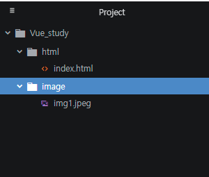
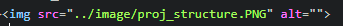
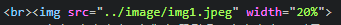

태그는 열리는 tag와 닫히는 tag로 이루어져 있다
열리는 태그는 다음과 같이 표시한다 ex) < tagName >로 표시한다
닫히는 태그는 안에 /'를 붙여서 다음과 같이 표시한다 ex) < / tagName>
태그를 사용할때 위처럼 여는태그와 닫히는 태그가 쌍으로 있는게 일반적이다 하지만 감싸지 않는 태그도 존재한다
무엇인가를 설명하지 않는 태그는 감싸야하는 컨텐츠가 없기 때문에 태그를 닫지 않는다
예로 img, input, br, hr, meta태그등이 있다
br태그는 줄바꿈을 해주는 태그이다 html에서 엔터를 입력하여 줄바꿈을 해도 웹상에서는 줄바꿈이 되지 않는다
그래서 br태그를 이용하여 줄바꿈을 해준다 $lt br $gt을 입력하면 c에서 '\n'을 쓴것과 같은 효과를 볼 수 있다.
p태그는 단락으로 묶어주는 태그이다. 단락을 나누기 위해서 br태그를 사용할 수도 있지만 의미에 맞게 p태그를 사용하는게 좋다
p태그를 그냥 사용하게 되면 단락사이의 간격의 크기가 고정적이다.
그래서 css를 이용하여 p태그의 단점을 극복할 수 있다
< p style="margin-top:30px"> 로 쓰게 되면 위로 간격(margin)을 30px크기 만큼 준다는 뜻이다.
의미에 맞는 태그를 사용하여야 한다
h태그를 이용하여 제목을 표시할 경우와 그냥 폰트사이즈만 바꿔서 표시하는 경우 같게 표시할 수 있다
하지만 검색엔진으로 검색을 한다면 h로 감싸진 태그를 찾게 될것이므로 어떤 코드를 이용하느냐도 중요하다( 의미에 맞게 사용!! )
특수기호들을 그냥 간단히 표시되지 않는다. 물론 간단하다(??)
공백, <, >, &, "와 같은 특수기호들을 표시하기 위해선 특별한 처리를 해주어야한다
공백:  로 표시하며 스페이스키를 누른 것과 같은 효과이다
<: 작다를 표현하는 부등호로 <로 표시한다
>: 크다를 표현하는 특수기호로 >로 표시한다
&: 엠퍼센트로 &로 표시한다
": 쌍따움표(quotation mark)로 "로 표시한다.
위의 이미지는 이미지 태그를 이용하여 표시한 이미지이다
이미지를 저작권 걱정없이 받을 수 있는 사이트가 있다: https://unsplash.com/
이미지를 프로젝트 폴더에 위치시킨다. 필자의 프로젝트 구조는 다음과 같다

아래와 같이 이미지 태그를 작성하면 웹에 원하는 이미지를 띄울수 있다.

이미지의 크기를 이미지 태그의 width속성을 이용하여 정의할 수 있다.
%를 이용하여 크기를 정하는데 100%로 하면 원본크기 그대로 50%하면 절반의 크기가 된다
위의 이미지가 위에서 똑같은 이미지의 크기를 20%의 크기로 변경하여 표시한 것이다.

위 처럼 width속성을 추가해주면 된다 간단!!!